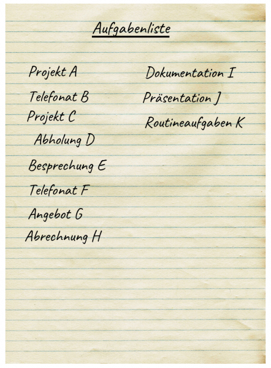
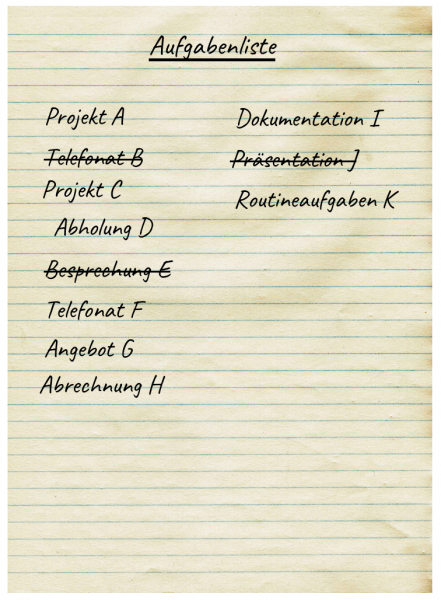
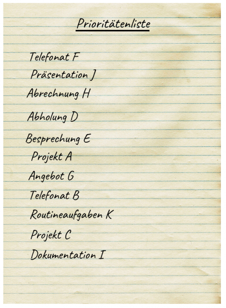
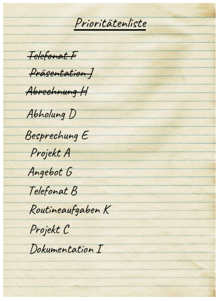
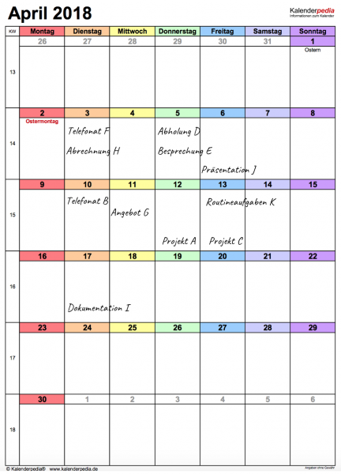
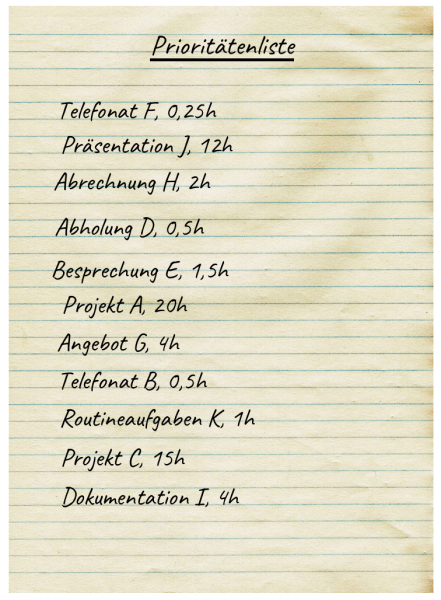
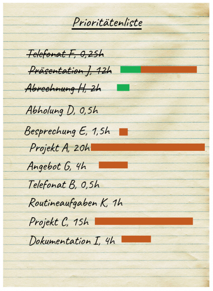
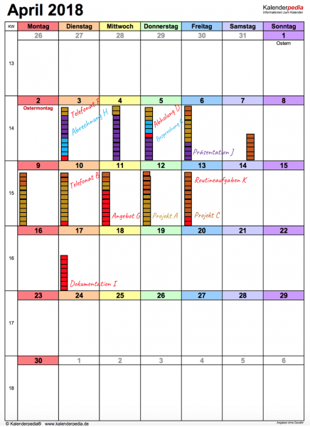
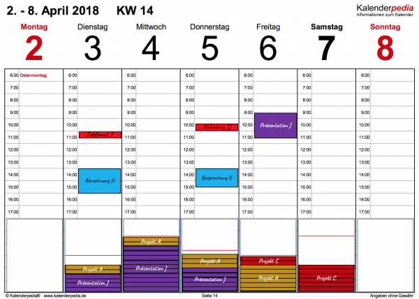
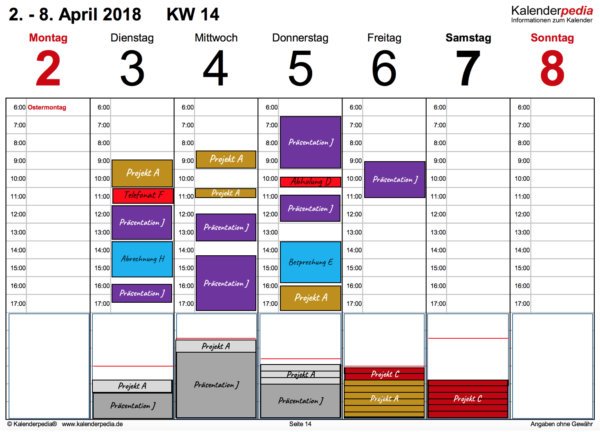

Werkzeugkasten der Planungsinstrumente
Zum Zeitmanagement gehört die Planung. In der Planung legen Sie fest, was wann wie lange zu tun ist. Ohne Planung keine Übersicht. Ohne Übersicht keine Klarheit und kein Fokus für zügige Abarbeitung. Und ohne Planungsinstrumente keine gute Planung.
Es lässt sich natürlich noch eine Menge mehr dazu sagen, wie Sie den Fluss Ihrer Aufmerksamkeit gestalten können. Doch in diesem Artikel möchte ich mich auf die Planung konzentrieren. Ohne einen differenzierten Blick auf deren grundsätzlichen Werkzeuge versanden nämlich schnell die wohlgemeinten vorherigen Investitionen in die Aufmerksamkeitsgestaltung wie Zieldefinition oder Aufgabenfindung oder Priorisierung.
Es gibt verschiedene Planungsinstrumente, mit denen Sie Ihre Aufgaben für die Abarbeitung organisieren können. Wählen Sie das, welches zu Ihnen und Ihrem Aufgabenmix am besten passt.
Planungsinstrument 1: Aufgabenliste
Das einfachste und allgemeinste der Planungsinstrumente ist die gute, alte Aufgabenliste. Sie versammelt Aufgaben ohne Unterschied. Ihre grundsätzliche Leistung besteht darin, dass Aufgaben überhaupt irgendwo „zu Papier gebracht werden“, d.h. aus Ihrem Kopf heraus wandern und explizit werden.
Mit einer Aufgabenliste haben Sie Aufgaben erstmalig vor Ihren Augen. Damit reduzieren Sie Ihren mentalen Aufwand. Sie müssen nicht mehr Aufgaben abarbeiten und sich gleichzeitig an alle Aufgaben erinnern. Ohne Aufgabenliste stehen Sie unter Stress; Sie müssen Angst haben, eine Aufgabe zu vergessen. Mit Aufgabenliste können Sie sich entspannen.
Ob Sie eine Aufgabenliste pflegen oder Ihre Aufgaben auf mehrere Listen verteilen, lassen ich einmal dahingestellt. Mir geht es hier nur um das Instrument überhaupt.

Mit einer Aufgabenliste stellen Sie eine Checkliste her, die Sie abarbeiten. Picken Sie eine Aufgabe heraus, erledigen Sie sie, haken Sie sie ab. Weiter mit der nächsten Aufgabe.

Das ist die simpelste Form der Planung. Weniger geht gar nicht, wenn Sie einer Flut von Aufgaben Herr werden wollen.
Planungsinstrument 2: Prioritätenliste
Eine Aufgabenliste entlastet dadurch, dass Sie sich weniger merken müssen. Richtig einfach wird die Abarbeitung der Checkliste jedoch nicht, weil Sie bei jeder Aufgabe wieder die ganze Liste beurteilen müssen, um festzustellen, was als nächstes dran ist: Ihre Augen bleiben beim Abgehakten hängen und müssen es aussortieren, den Rest müssen wieder und wieder nach irgendwelchen Kriterien in seiner Priorität beurteilen. Das ist mühsam.
Abhilfe schafft die Trennung der Priorisierung von der Abarbeitung. Bringen Sie die noch zu erledigenden Aufgaben in eine Reihenfolge für die Abarbeitung nach welchen Kriterien auch immer – und dann konzentrieren Sie sich nur noch auf die Erledigung in dieser Reihenfolge.
Das ist nicht nur entlastend für die Abarbeitung, sondern auch hilfreich für die Priorisierung. Die ist nämlich durchaus kritisch und braucht einige Aufmerksamkeit. Sie sollten gar nicht erst versuchen, nebenbei zu priorisieren. Machen Sie daraus eine eigene Phase in der Aufmerksamkeitsgestaltung. Dafür gibt es auch ganz eigene Hilfestellungen.
Nach gefundener Priorisierung notieren Sie Ihre Aufgaben dann in dieser Reihenfolge in einer Liste, der Prioritätenliste.

Und in dieser Reihenfolge arbeiten Sie die Aufgaben tapfer ab. Von oben nach unten. Eine nach der anderen. Schauen Sie nicht links, nicht rechts während der Abarbeitung.

Planungsinstrument 3: Fristenkalender
Ohne näher auf Priorisierungskriterien eingehen zu wollen, liegt eines auf der Hand: Aufgaben mit einer Frist, d.h. einem Fertigstellungszeitpunkt oder einem Anfangstermin verdienen besondere Aufmerksamkeit.
Sie müssen sicherstellen, dass Aufgaben bis zum Fertigstellungszeitpunkt tatsächlich erledigt sind. Oder Sie können Sie unberücksichtigt lassen, solange der Anfangszeitpunkt nicht eingetreten ist.
Fristen sind also eine wichtige Information und dürfen deshalb in einer Aufgabenübersicht nicht fehlen. Im einfachsten Fall schreiben Sie sie neben die Aufgaben in Ihrer Prioritätenliste. Wenn Sie jedoch mehrere Fristen berücksichtigen müssen, verlieren Sie dabei schnell den Überblick. Besser ist es, Fristen in einem Kalender zu notieren. Wenn Sie die zwei Dimensionen eines Blattes nutzen, haben Sie ein viel besseres Gefühl dafür, wann Sie sich welcher Aufgabe widmen sollten.

In diesem Kalender sehen Sie die Aufgaben verteilt über mehrere Tage. In manchen Fällen sind Sie nach ihrer Anfangsfrist eingetragen, z.B. „Telefonat F“ oder „Abholung D“; in anderen Fällen sind sie nach Fertigstellungsfrist eingetragen, z.B. „Projekt A“ oder „Dokumentation I“.
Der Vorteil dieser Darstellung liegt in der Fristenübersicht. Anders als bei der Prioritätenliste sehen Sie hier, dass nicht alles gleich fällig ist. „Abholung D“ liegt viel später als „Abrechnung H“, auch wenn beide Aufgaben in der Prioritätenliste unmittelbar hintereinander stehen.
Nachteilig allerdings ist, dass im Fristenkalender die Prioritäten eben nicht mehr sichtbar sind. „Präsentation J“ ist recht hoch priorisiert worden, doch erst am 6.4. fällig. Wie kommt es, dass sie in der Prioritätenliste durchgestrichen ist, „Abholung D“ aber nicht?
Die Antwort ist einfach: die Prioritätenliste ist ein Schnappschuss an einem Tag. Sie zeigt z.B. den Stand am Abend des 3. April. An dem Tag wurden „Telefonat F“ und „Abrechnung H“ erledigt und für „Präsentation J“ wurde ebenfalls Zeit aufgewandt, ohne die Aufgabe jedoch fertigzustellen. Es wurde also nur ein Tagespensum geschafft.
Eine Prioritätenliste allein und ein Fristenkalender allein sind deshalb nicht genug. Die Kombination macht’s. Dafür zwei Blätter zu pflegen und die Prioritätenliste auch noch jeden Tag zu überarbeiten, macht allerdings keinen Spaß.
Planungsinstrument 4: Aufmerksamkeitskalender
Der scheinbare Widerspruch zwischen hoher Priorität und später Frist im Beispiel weist darauf hin, dass noch etwas fehlt. Warum sollte „Präsentation J“ schon am 3.4. so hoch priorisiert werden, wenn der Fertigstellungstermin doch erst der 6.4. ist? Das liegt am geschätzten Aufwand zur Erledigung der Aufgabe. Der fehlt bisher völlig in den Listen und auch im Kalender.
Wie viel Aufmerksamkeit braucht jede Aufgabe? Das ist eine wesentliche Information für die Priorisierung und auch die Tageseinteilung. Diese Angabe allerdings nur in der Prioritätenliste zu notieren, ist recht abstrakt.

Und selbst wenn Sie sie graphisch darstellen würden, hätten Sie noch nicht viel Klarheit gewonnen:

Denn was in der Prioritätenliste immer noch fehlt ist erstens eine fristenmäßige Übersicht und zweitens eine Verteilung größerer Aufwände. Der Prioritätenliste können Sie nicht ansehen, was Sie in einem Tag schaffen können oder sollten.
Ich schlage deshalb als nächste Stufe einen Kalender vor, in dem Sie vermerken, wann Sie Ihre Aufmerksamkeit worauf wie lange richten wollen.

In diesem Aufmerksamkeitskalender ist der Tag in Blöcke von 30 Minuten unterteilt. Feingranularer sollten Sie nicht planen. Falls Aufgaben weniger Aufwand benötigen, legen Sie mehrere in einem Block zusammen – oder belassen Sie es bei einer Aufgabe und erledigen in übrig gebliebener Zeit Kleinkram.
Im Bild passen allerdings nicht mehr als 12-13 Blöcke in jeden Tag. Das ist Absicht. Sie sollten nämlich nicht Ihre ganze Arbeitszeit (8 Stunden) verplanen, sondern einen Puffer lassen. Manche sagen, dieser Puffer sollte 40% betragen, andere sehen ihn eher bei 15-20%. Ich habe ihn hier mal mit 1,5-2 Stunden angesetzt, so dass min. 6 Stunden planbare Zeit pro Tag zur Verfügung stehen.
Während der Planung bleibt der Puffer leer. Am Ende jedes Tages ist der Puffer aber natürlich voll. Sie sitzen nicht herum und drehen Däumchen. Irgendetwas ist immer. Entweder brauchen Sie für eine geplante Aufgabe länger als geplant. Oder eine ungeplante Aufgabe kommt hinzu. Oder es gibt Unterbrechungen, die die Dauer der Erledigung erhöhen, ohne den Aufwand zu verändern.
Durch den Aufmerksamkeitskalender bekommen Sie große Klarheit darüber
- wann Fristen zu bedienen sind.
- wie die Prioritäten sind.
- ob Sie den Aufwand einer Aufgabe am Fristtag erbringen können (z.B. „Besprechung E“ am 5.4. oder „Dokumentation I“ am 17.4.) oder verteilen müssen (z.B. „Präsentation J“ oder „Projekt A“).
- ob Sie ausreichend Kapazität haben oder überlastet sind. Im Beispiel liegt eine Überlastung vor: „Projekt C“ kann nicht in der planbaren Zeit komplett abgearbeitet werden. (Zumindest nicht, wenn als Planungstag der 3.4. angenommen ist.) Die Lösung in diesem Fall in Wochenendarbeit; alternativ könnten andere Tage „überplant“ werden, d.h. in den Puffer hinein oder gar darüber hinaus verplant werden. Oder man sagt Nein zu „Projekt C“, weil man durch die Planung sieht, dass es eben nicht machbar ist.
Klarheit bedeutet nicht, dass Ihnen gefällt, was Sie sehen. Aber zumindest wissen Sie mit einem Aufmerksamkeitskalender, woran Sie sind. Sie können Maßnahmen der einen oder anderen Art proaktiv ergreifen, um Risiken der Unzuverlässigkeit zu minimieren. Sie behalten die Kontrolle über Ihre Zeit und wissen stets, ob Sie sich zurecht überlastet fühlen. Mit einem Aufmerksamkeitskalender planen und dokumentieren Sie den Fluss Ihrer Aufmerksamkeit von Aufgabe zu Aufgabe, so dass Sie auch in schwierigen Verhandlungssituationen hart bleiben können.
Der für mich zentrale Aspekt beim Aufmerksamkeitskalender besteht jedoch darin, Ihre Aufmerksamkeit sorgsam zu verteilen. Knifflig sind nicht Aufgaben mit einem Aufwand von wenigen Minuten bis zu vielleicht 4 Stunden. Nein, knifflig sind Aufgaben, die länger, gar deutlich länger brauchen. Bei ihnen muss der Aufwand über mehrere Tage verteilt werden. Das ist ein bewusster Akt für Sie, weil solche Aufgaben keine Termine sind, bei denen Anfangs- und Endzeitpunkt vorgegeben wurden wie z.B. bei „Besprechung E“. Termine planen sich fast von allein. Aufwändige Aufgaben hingegen drohen, sich aufzuhäufen bis zur Überlastung, weil sie eben nicht wie selbstverständlich in einen Terminkalender eingetragen werden (s.u.).
Der Aufmerksamkeitskalender ist daher ein ausgewiesener Kapazitätsplanungskalender. Das mag sich für Sie anhören wie bei einer Fabrik. Ja, warum aber nicht? Auch wenn Sie „nur“ im Office arbeiten, wenn Sie „Schreibtischtäterin“ sind, heißt das ja nicht, dass Sie nicht effizient und effektiv produzieren sollen. Die Probleme dabei sind für Sie nach meinem Empfinden sogar größer als in einer industriellen Produktion. Ihre Aufgaben kommen nämlich in viel größerer Variationsbreite, haben ungenauere Anforderungen, tauchen viel plötzlicher auf und sind auch noch weniger dinglich. Solide Planung ist also das A und O im Office, wenn Sie nicht untergehen wollen.
Im Beispiel sind „Präsentation J“ und die Projekte die harten Nüsse. Der Aufwand ist zwar klar – nur wann soll der erbracht werden? Am Tag des Liefertermins ist nicht genügend Zeit. Wie also den Aufwand auf vorherige Tage verteilen? Um die Projekte zu realisieren, muss sogar mehr als eine Woche vor Fristende damit begonnen werden. Dadurch entsteht zwangsläufig eine sehr unschöne Multitasking-Situation. Doch die ist bei diesen Fristsetzungen nicht zu vermeiden. Mit einer soliden Kapazitätsplanung kann deshalb nur gerettet werden, was noch zu retten ist. Ein ruhiger Fluss sieht anders aus – allemal, da zu erwarten ist, dass die Aufwandsabschätzungen zu optimistisch sind. Selbst die Planung wie oben gezeigt ist also zu knapp. Zwar sind die Tage nicht überplant, doch die aufwändigen Projekte sind zu eng am Fristende geplant. Aber das ist ein Thema für einen anderen Beitrag. Hier möchte ich Ihnen nur überhaupt das Planungsinstrument Aufmerksamkeitskalender vorstellen.
Planungsinstrument 5: Terminkalender
Zum Abschluss nun der Terminkalender. Er ist zwar neben der Aufgabenliste das bekanntest Planungsinstrument, doch Sie sehen, für mich steht er erst am Ende dieses Überblicks. Er ist schlicht nur eine Verfeinerung des wichtigeren Aufmerksamkeitskalenders, indem er einigen Aufmerksamkeitsblöcken konkrete Zeiten während des Tages zuweist. Hier ein Ausschnitt aus der obigen Kapazitätsplanung:

Im oberen Teil des Terminkalenders stehen die Termine. Für diese Aufgaben ist genau festgelegt, von wann und bis wann sie zu bearbeiten sind. Das bedeutet meistens auch, dass noch eine weitere Partei involviert ist wie bei einem Telefonat oder einer Besprechung.
„Abrechnung H“ fällt aus diesem Schema etwas heraus, weil es dabei nicht um ein „Rendezvous“ zweier Parteien geht, sondern nur um eine rechtzeitige Erledigung mit Abgabe. Allerdings soll der Aufwand erst direkt vor der Abgabefrist erbracht werden, deshalb steht die Erledigung im Termin-Teil des Kalenders.
Alle weiteren Aufgaben stehen im Kapazitätsteil unterhalb des Termin-Teils. Dort wird der Aufmerksamkeitskalender geführt wie oben besprochen.
Einen Unterschied gibt es jedoch: die Grenze für die maximale Auslastung (rote Linie) ist nicht konstant z.B. bei 80% der Tageskapazität. Sie verschiebt sich vielmehr nach unten, je nachdem wie viele Termine am Tag im oberen Teil eingeplant sind. Im Beispiel steht sie nur am Dienstag und Samstag beim Maximum. Termine drücken die freie Kapazität für terminunabhängige Aufgaben an den anderen Tagen.
Hervorhebenswert ist noch der Termin am Freitag. Während die „Präsentation J“ an den vorherigen Tagen im Aufmerksamkeitskalender stand, taucht sie nun im Terminkalender auf. Der Grund: am Freitag wird die Präsentation gehalten, während vorherige Aufwände ihrer Vorbereitung gedient haben. Der Gesamtaufwand von 12 Stunden beinhaltete also von vornherein zwei Aspekte.
Aufwände im Terminkalender müssen zum geplanten Zeitraum am Tag erbracht werden. Aufwände im Aufmerksamkeitskalender können über den Tag beliebig verteilt werden.
Wenn Sie es perfekt machen wollen, vermerken Sie nachträglich nicht nur, auf was Sie wirklich Ihre Aufmerksamkeit gerichtet haben, sondern tragen das auch noch im Terminkalender nach. Das ist der Stand am Donnerstag Abend:

Die Kapazitätsplanung ist im unteren Teil stehengeblieben, aber nun ausgegraut. Was tatsächlich getan wurde, steht nur noch im Termin-Teil.
Aber das ist lediglich eine Möglichkeit einer „Nachplanung“. Sie könnten auch alle Aufwände in den unteren Teil schieben, um etwas kompakter zu sehen, wie weit über die Kapazitätsplanungsgrenze Sie gekommen sind.
Wie Sie es machen: spannend ist die Differenz zwischen Wunsch und Realität, Planung und Tagesgeschäft. Wenn Sie deren Entwicklung beobachten, können Sie Ihre Planung mit der Zeit sicher verbessern.
Fazit
So weit die Übersicht grundlegender Planungsinstrumente. Sie sehen: eine Liste mag ein Anfang sein, aber letztlich ist eine Liste nicht genug. Ohne Kenntnis zumindest geschätzter Aufwände und einen Kalender sind Sie Spielball anderer Kräfte auf Ihrer dahinfließenden Lebenszeit. Ob Ihnen eher ein Terminkalender oder ein Aufmerksamkeitskalender oder die vorgestellte Kombination dient, müssen Sie ausprobieren. Das hängt vom Mix Ihrer Aufgaben ab.
Sobald Sie jedoch mit Aufwänden jenseits von 4 Stunden zu tun haben, rate ich Ihnen dringend dazu, sie ganz bewusst und sichtbar im Sinne eines Aufmerksamkeitskalenders zu verteilen.
Weitere Artikel

Puffer sichern Flow
Es wird allerhöchste Zeit, sich von der Idee, dass nur wer am Limit arbeitet, effizient sei, zu verabschieden. Unter Volllast, ganz ohne Puffer zu arbeiten ist eine „gute“ Voraussetzung für Unzuverlässigkeit, Fehler …

Kollaboration im Office mit Kanbanize
Ein Tool, was mich für die digitale Kollaboration im Office begeistert ist Kanbanize. Dort kann man wirklich sehr fortgeschritten und smart zusammenarbeiten. Mit seinen verschiedenen Perspektiven auf den Flow im Office, der …